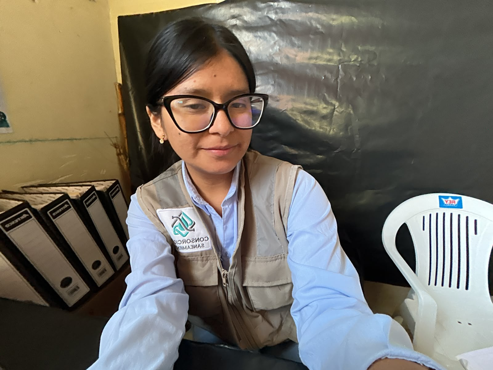
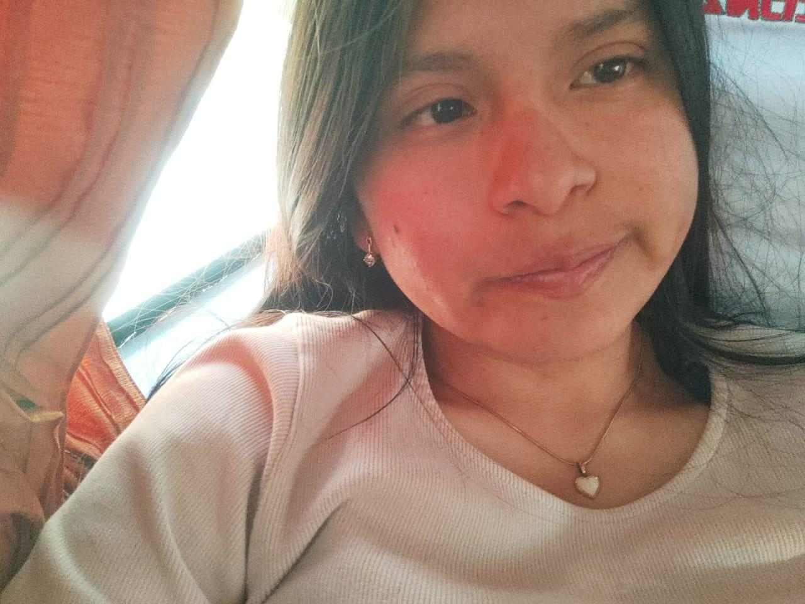
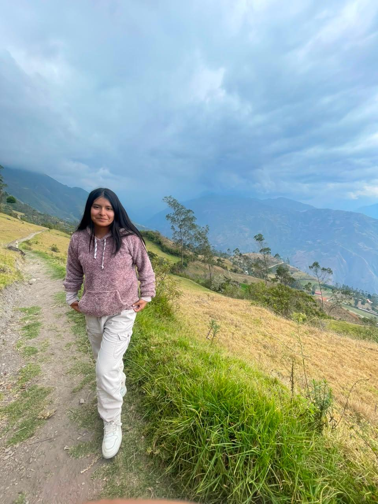
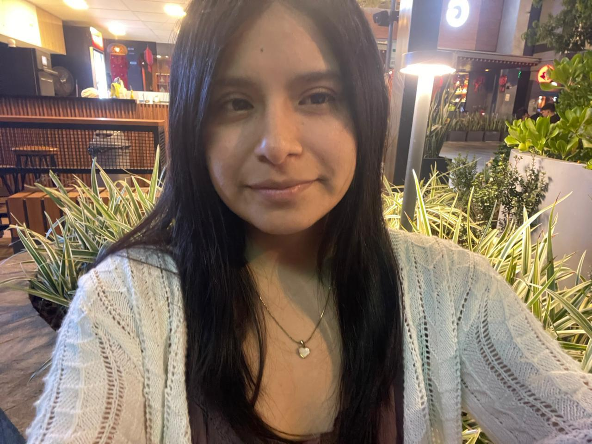
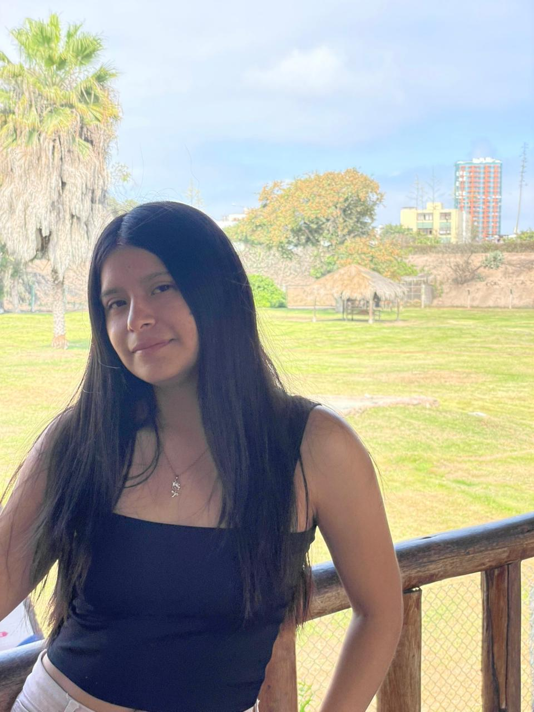
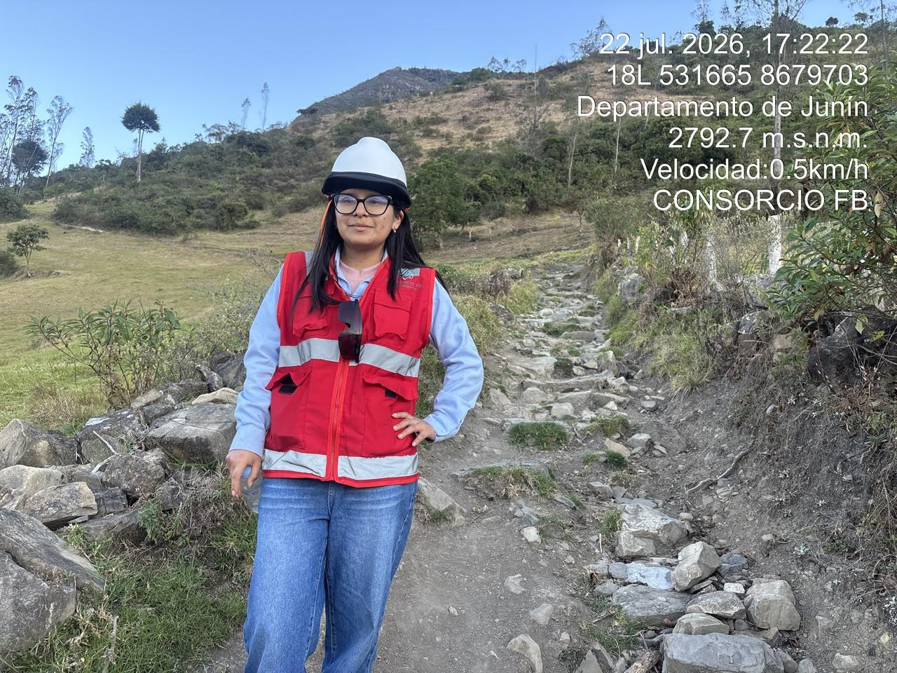
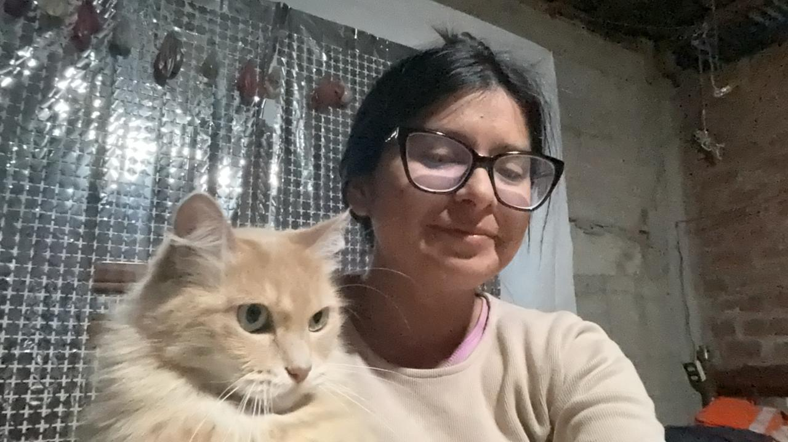
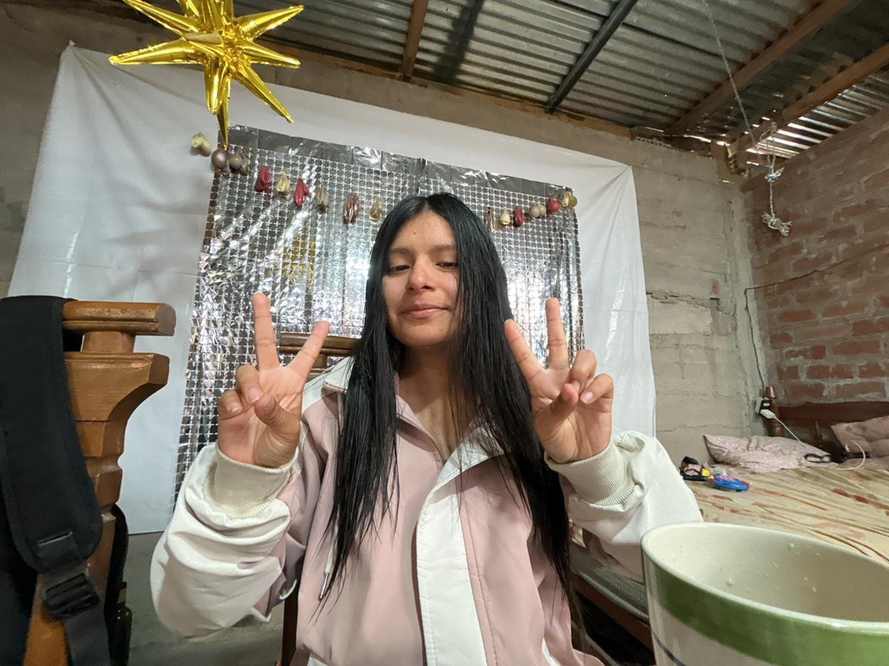
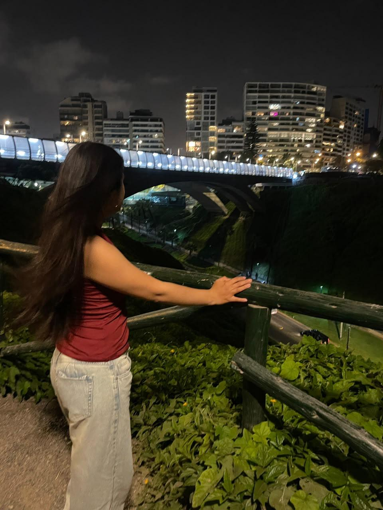
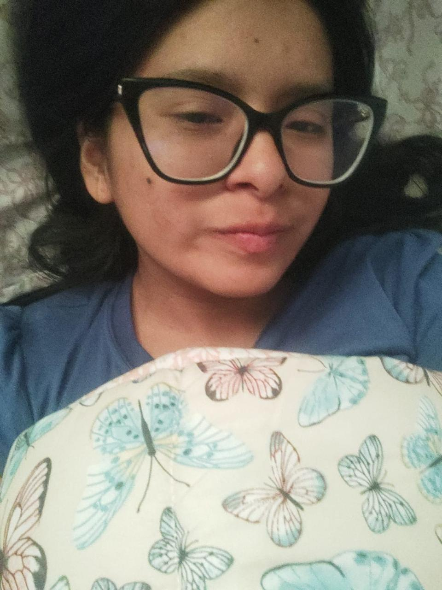

HAPPY
MAGAZINE




Escribe aquí tu texto de dedicatoria inferior. Este espacio está diseñado para guardar tus pensamientos más sinceros y recuerdos inolvidables.
Escribe aquí el primer párrafo. Puedes contar una anécdota, lo que significa para ti su compañía o cómo ilumina tus días.
Escribe aquí el segundo párrafo. Expresa lo que te inspira y cómo te motiva a ser mejor.


"Escribe aquí una frase o un recuerdo muy especial entre comillas. Este es el texto destacado del artículo."




¡Feliz cumpleaños! Eres una chica unica y muy especial para mi. Te amo demasiado. Fuiste quien le dio brillo a mi vida, antes de conocerte vivia la vida en automatico sin ningun proposito y cuando te conoci simplemente todo fluyo, entraste en mi vida sin pedir permiso y me hiciste ver la vida de otra manera. De que no todo estaba perdido para mi y cada que tenia algun problema o me sentia decaido nunca te lo decia,porque no queria preocuparte , pero te juro que cuando te veia todo desaparecia y queria hacerte la chica mas feliz del mundo. Se que no fui perfecto, pero estoy mejorando. Estoy loco por ti , tanto que aguantaria lo que sea por ti. Se que me dejaste las cosas en claro,pero siento que todavia no pierdes las esperanzas en mi y sabes que puedo mejorar y ya no volver a lo mismo y no te vas a arrepentir si decides confiar en mi una ultima vez.